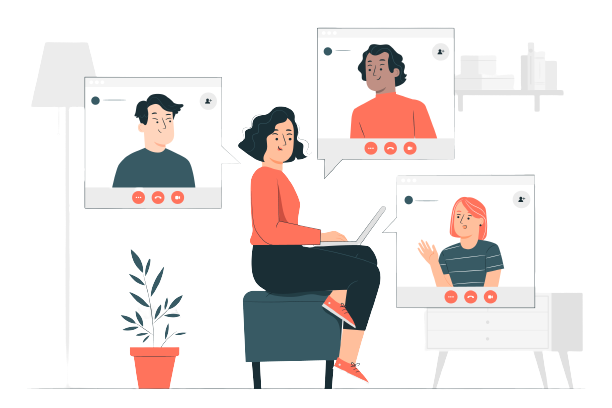

Tentang Ruang Berproses
Selamat datang di Ruang Berproses
Mempelajari psikologi tidak serta merta membuat seseorang paham 100% bagaimana cara merawat dan menjaga kesehatan mental, apalagi bagi yang tidak sama sekali menerima edukasi terkait kesehatan mental. Padahal, kebutuhan akan edukasi tersebut sangatlah penting. Bagaimana seseorang dalam proses kehidupannya memiliki wadah dalam melihat dirinya lebih positif dan mampu menjadi manusia yang berdampak bagi orang disekelilingnya adalah harapan kami dalam mendirikan Ruang untuk siapapun Berproses dengan kondisi kesehatan mentalnya.
Yohana Sondang Activa Hutabarat, M.Psi
Founder Ruang Berproses
-
Visi
Setiap orang menyadari bahwa Kesehatan mental adalah penting dan setiap orang memiliki ruang untuk berproses dengan dirinya.
-
Misi
Mengadvokasi mengenai pentingnya akan Kesehatan mental dan mendampingi setiap orang yang ingin berproses dengan kondisi kesehatan mentalnya selaras dengan perubahan yang terus terjadi didalam proses kehidupan.
-
Tagline
"Selalu ada ruang untuk kamu berproses menuju versi terbaikmu."
Profil Ruang Berproses
Associate Psychologist
Testimoni

"Pembicaranya asik dan moderatornya juga keren. Disetiap pembicara selesai menjawab pertanyaan peserta, moderator selalu menyimpulkan jawaban pembicara"
-R.A.B (21 tahun, Mahasiswa psikologi)
"Kesan webinar sangat baik. Saya mendapat wawasan lebih luas dan mendalam mengenai journaling serta manfaatnya secara spesifik terhadap kesehatan mental, karena saya belum pernah mendalami mengenai journaling"
-S.E.A (42 tahun, Konselor sekolah)
"Seru bangetttt menjadi pengalaman dalam hidup saya karena dengan adanya sesi ini saya dapat bercerita apa yang dialami oleh saya sehingga saya mendapatkan kesempatan untuk bercerita pada sesi ini"
-M
"Awalnya saya merasa takut dan ragu untuk bercerita pada orang lain. Namun setelah saya melakukan sesi konseling saya merasa lega, nyaman, dan seperti menemukan hal yang saya cari selama ini. Bukan sekedar omongan motivasi melainkan ilmu dan solusi."
-S
"Menurutku gak terlalu mahal dan Psikolog RB yang konseling aku waktu itu juga baik & bisa menghangatkan suasana, ngga canggung juga, yang jelas aku bisa mengatasi masalahku."
-N